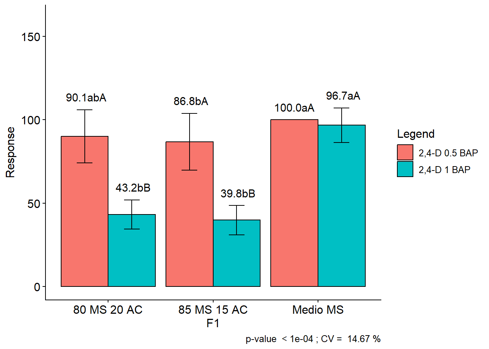
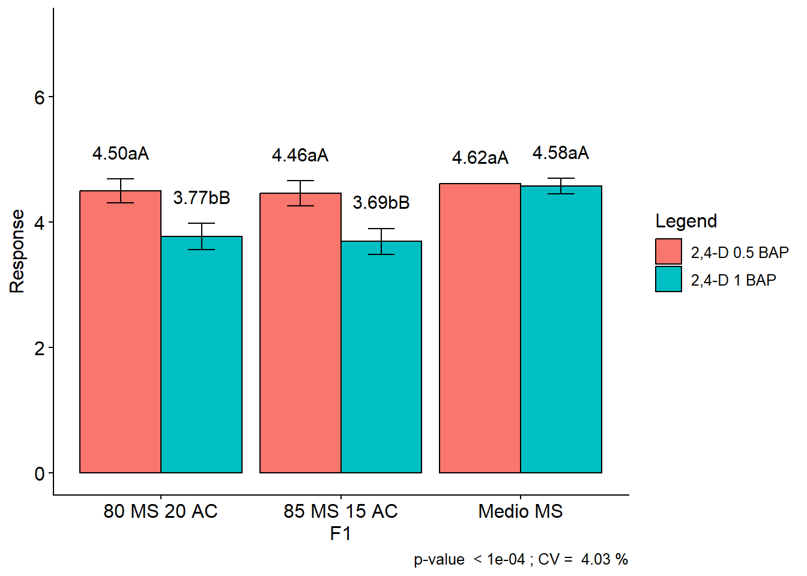
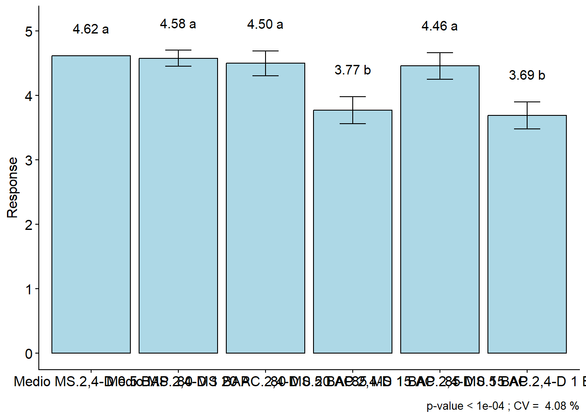
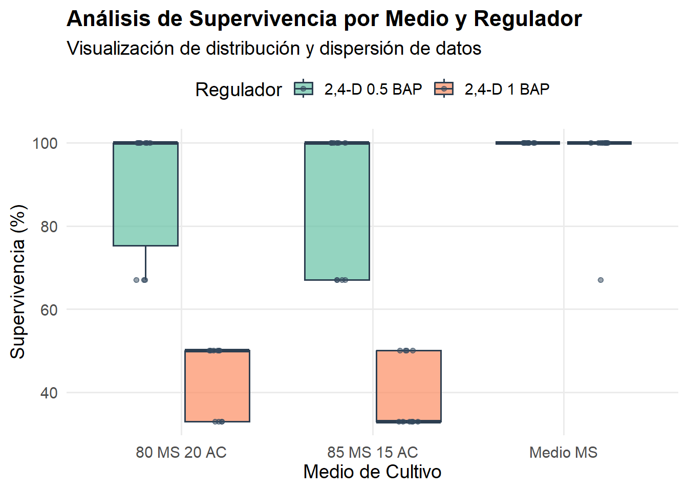

# PREPARACIÓN DEL ENTORNO DE TRABAJO# Instalación y carga de paquetes necesarios# Para leer archivos Excelif(!require(readxl)) install.packages("readxl")
Cargando paquete requerido: readxl
# Para visualización y manipulación de datosif(!require(tidyverse)) install.packages("ggplot2")
Cargando paquete requerido: tidyverse
── Attaching core tidyverse packages ──────────────────────── tidyverse 2.0.0 ──
✔ dplyr 1.1.4 ✔ readr 2.1.5
✔ forcats 1.0.1 ✔ stringr 1.5.2
✔ ggplot2 4.0.0 ✔ tibble 3.3.0
✔ lubridate 1.9.4 ✔ tidyr 1.3.1
✔ purrr 1.1.0
── Conflicts ────────────────────────────────────────── tidyverse_conflicts() ──
✖ dplyr::filter() masks stats::filter()
✖ dplyr::lag() masks stats::lag()
ℹ Use the conflicted package (<http://conflicted.r-lib.org/>) to force all conflicts to become errors
# Para analisis de experimentosif(!require(AgroR)) install.packages("AgroR")
Cargando paquete requerido: AgroR
Adjuntando el paquete: 'AgroR'
The following object is masked from 'package:dplyr':
desc
# Para exportar archivos en excel if(!require(writexl)) install.packages("writexl")
Cargando paquete requerido: writexl
# Importar datos desde el archivo Exceldatos <-read_excel("datos.xlsx", sheet =1)# Estructura del conjunto de datosstr(datos)
As the calculated p-value is greater than the 5% significance level, hypothesis H0 is not rejected. Therefore, the variances can be considered homogeneous
As the calculated p-value is greater than the 5% significance level, hypothesis H0 is not rejected. Therefore, errors can be considered independent
-----------------------------------------------------------------
Additional Information
-----------------------------------------------------------------
CV (%) = 14.67
Mean = 76.1
Median = 100
Possible outliers = No discrepant point
-----------------------------------------------------------------
Analysis of Variance
-----------------------------------------------------------------
Df Sum Sq Mean.Sq F value Pr(F)
F1 2 14964.100 7482.0500 60.069268 1.975568e-13
F2 1 15746.400 15746.4000 126.419192 1.166156e-14
Block 9 1662.733 184.7481 1.483241 1.834180e-01
F1 × F2 2 6351.100 3175.5500 25.494746 3.955929e-08
Residuals 45 5605.067 124.5570
Your analysis is not valid, suggests using a non-parametric test and try to transform the data
-----------------------------------------------------------------
Significant interaction: analyzing the interaction
-----------------------------------------------------------------
-----------------------------------------------------------------
Analyzing F1 inside of each level of F2
-----------------------------------------------------------------
Df Sum Sq Mean Sq F value Pr(>F)
Block 9 1662.7 184.7 1.4832 0.18342
F2 1 15746.4 15746.4 126.4192 1.166e-14 ***
F1 × F2 + F1 4 21315.2 5328.8 42.7820 8.726e-15 ***
F1:F2 2,4-D 0.5 BAP 2 943.8 471.9 3.7886 0.03015 *
F1:F2 2,4-D 1 BAP 2 20371.4 10185.7 81.7754 1.035e-15 ***
Residuals 45 5605.1 124.6
---
Signif. codes: 0 '***' 0.001 '**' 0.01 '*' 0.05 '.' 0.1 ' ' 1
-----------------------------------------------------------------
Analyzing F2 inside of the level of F1
-----------------------------------------------------------------
Df Sum Sq Mean Sq F value Pr(>F)
Block 9 1662.7 184.7 1.4832 0.1834
F1 2 14964.1 7482.0 60.0693 1.976e-13 ***
F1 × F2 + F2 3 22097.5 7365.8 59.1362 1.189e-15 ***
F2:F1 80 MS 20 AC 1 10998.1 10998.1 88.2973 3.520e-12 ***
F2:F1 85 MS 15 AC 1 11045.0 11045.0 88.6742 3.301e-12 ***
F2:F1 Medio MS 1 54.5 54.5 0.4371 0.5119
Residuals 45 5605.1 124.6
---
Signif. codes: 0 '***' 0.001 '**' 0.01 '*' 0.05 '.' 0.1 ' ' 1

-----------------------------------------------------------------
Final table
-----------------------------------------------------------------
2,4-D 0.5 BAP 2,4-D 1 BAP
80 MS 20 AC 90.1 abA 43.2 bB
85 MS 15 AC 86.8 bA 39.8 bB
Medio MS 100.0 aA 96.7 aA
Averages followed by the same lowercase letter in the column
and uppercase in the row do not differ by the tukey (p< 0.05 )
Tranformados
# 1. Transformación de la variable# Nota: Sumamos 1 por si existen valores de 0, ya que log(0) es indeterminadodatos$Supervivencia_log <-log(datos$Supervivencia +1)# 2. Ejecución del ANOVA con interacción desglosada# Usamos FAT2DBC del paquete AgroR# Para ver la prueba de Tukey de la interacción, el paquete lo hace # automáticamente si detecta significancia, o puedes explorar los desdoblamientos.analisis_trans <-FAT2DBC(datos$Medio, datos$Regulador, datos$Repeticion, datos$Supervivencia_log,mcomp ="tukey")
As the calculated p-value is greater than the 5% significance level, hypothesis H0 is not rejected. Therefore, the variances can be considered homogeneous
As the calculated p-value is greater than the 5% significance level, hypothesis H0 is not rejected. Therefore, errors can be considered independent
-----------------------------------------------------------------
Additional Information
-----------------------------------------------------------------
CV (%) = 4.03
Mean = 4.267
Median = 4.6151
Possible outliers = No discrepant point
-----------------------------------------------------------------
Analysis of Variance
-----------------------------------------------------------------
Df Sum Sq Mean.Sq F value Pr(F)
F1 2 3.2700215 1.63501077 55.413008 7.292599e-13
F2 1 3.9254413 3.92544128 133.039190 4.940785e-15
Block 9 0.3065151 0.03405723 1.154251 3.466642e-01
F1 × F2 2 1.6752001 0.83760005 28.387543 1.060104e-08
Residuals 45 1.3277656 0.02950590
-----------------------------------------------------------------
Significant interaction: analyzing the interaction
-----------------------------------------------------------------
-----------------------------------------------------------------
Analyzing F1 inside of each level of F2
-----------------------------------------------------------------
Df Sum Sq Mean Sq F value Pr(>F)
Block 9 0.3065 0.0341 1.1543 0.3467
F2 1 3.9254 3.9254 133.0392 4.941e-15 ***
F1 × F2 + F1 4 4.9452 1.2363 41.9003 1.258e-14 ***
F1:F2 2,4-D 0.5 BAP 2 0.1356 0.0678 2.2985 0.1121
F1:F2 2,4-D 1 BAP 2 4.8096 2.4048 81.5020 1.098e-15 ***
Residuals 45 1.3278 0.0295
---
Signif. codes: 0 '***' 0.001 '**' 0.01 '*' 0.05 '.' 0.1 ' ' 1
-----------------------------------------------------------------
Analyzing F2 inside of the level of F1
-----------------------------------------------------------------
Df Sum Sq Mean Sq F value Pr(>F)
Block 9 0.3065 0.03406 1.1543 0.3467
F1 2 3.2700 1.63501 55.4130 7.293e-13 ***
F1 × F2 + F2 3 5.6006 1.86688 63.2714 3.529e-16 ***
F2:F1 80 MS 20 AC 1 2.6412 2.64117 89.5133 2.863e-12 ***
F2:F1 85 MS 15 AC 1 2.9516 2.95165 100.0358 5.171e-13 ***
F2:F1 Medio MS 1 0.0078 0.00783 0.2652 0.6091
Residuals 45 1.3278 0.02951
---
Signif. codes: 0 '***' 0.001 '**' 0.01 '*' 0.05 '.' 0.1 ' ' 1

-----------------------------------------------------------------
Final table
-----------------------------------------------------------------
2,4-D 0.5 BAP 2,4-D 1 BAP
80 MS 20 AC 4.50 aA 3.77 bB
85 MS 15 AC 4.46 aA 3.69 bB
Medio MS 4.62 aA 4.58 aA
Averages followed by the same lowercase letter in the column
and uppercase in the row do not differ by the tukey (p< 0.05 )
# 3. Si la interacción NO es significativa (como en tu salida anterior)# pero quieres ver las comparaciones de medias de los grupos combinados:# Podemos crear una variable combinada para forzar un ANOVA de una vía # y comparar todos contra todos.datos$Interaccion <-interaction(datos$Medio, datos$Regulador)# Usando un DBC simple para ver la comparación totalwith(datos, DIC(Interaccion, Supervivencia_log, mcomp ="tukey"))
As the calculated p-value is greater than the 5% significance level, hypothesis H0 is not rejected. Therefore, errors can be considered independent
-----------------------------------------------------------------
Additional Information
-----------------------------------------------------------------
CV (%) = 4.08
MStrat/MST = 0.98
Mean = 4.267
Median = 4.6151
Possible outliers = No discrepant point
-----------------------------------------------------------------
Analysis of Variance
-----------------------------------------------------------------
Df Sum Sq Mean.Sq F value Pr(F)
Treatment 5 8.870663 1.77413259 58.621 1.346356e-20
Residuals 54 1.634281 0.03026446
As the calculated p-value, it is less than the 5% significance level.The hypothesis H0 of equality of means is rejected. Therefore, at least two treatments differ
-----------------------------------------------------------------
Multiple Comparison Test: Tukey HSD
-----------------------------------------------------------------
resp groups
Medio MS.2,4-D 0.5 BAP 4.615121 a
Medio MS.2,4-D 1 BAP 4.575559 a
80 MS 20 AC.2,4-D 0.5 BAP 4.496437 a
85 MS 15 AC.2,4-D 0.5 BAP 4.456875 a
80 MS 20 AC.2,4-D 1 BAP 3.769640 b
85 MS 15 AC.2,4-D 1 BAP 3.688547 b
Your analysis is not valid, suggests using a non-parametric test and try to transform the data

nn
library(ggplot2)# Crear el gráfico estéticoggplot(datos, aes(x = Medio, y = Supervivencia, fill = Regulador)) +# Boxplot con transparencia para ver los puntos detrásgeom_boxplot(alpha =0.7, outlier.shape =NA, color ="#2c3e50") +# Añadir los puntos de los datos reales para identificar variabilidadgeom_jitter(position =position_jitterdodge(jitter.width =0.2), alpha =0.5, size =1.5, color ="#34495e") +# Paleta de colores profesionalscale_fill_brewer(palette ="Set2") +# Etiquetas claraslabs(title ="Análisis de Supervivencia por Medio y Regulador",subtitle ="Visualización de distribución y dispersión de datos",x ="Medio de Cultivo",y ="Supervivencia (%)",fill ="Regulador") +# Tema minimalistatheme_minimal(base_size =14) +theme(plot.title =element_text(face ="bold", size =16),panel.grid.minor =element_blank(),legend.position ="top",axis.text.x =element_text(angle =0, vjust =0.5) )

# Ajustamos un modelo lineal estándar para diagnósticomodelo <-lm(Supervivencia_log ~ Medio * Regulador +factor(Repeticion), data = datos)# Graficar diagnósticospar(mfrow =c(2, 2))plot(modelo)